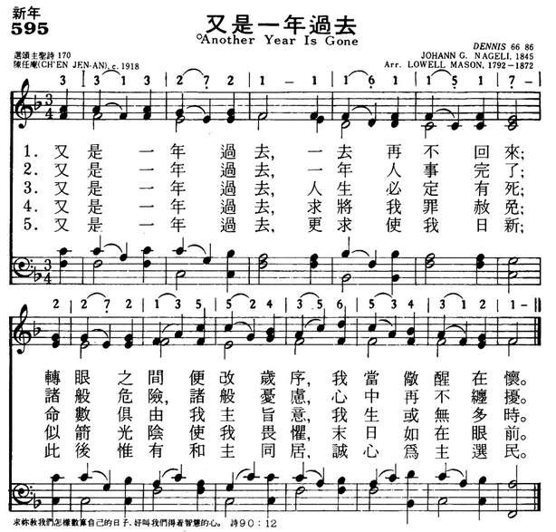

|
|
【又是一年過去】 |
|
|
又是一年過去，一去再不回來；
|
|
https://www.zanmeishige.com/tab/13853.html?songbook=1&index=180

|
|
|
|
|
-

-
又是一年過去(世紀頌讚311首)
https://www.youtube.com/watch?v=GVszhcpM1YY
-
180一年又过歌（简谱版）新编赞美诗400首+短歌42首
Chinese Psalms Holy Bible
-
一年又过歌 ANOTHER YEAR HAS PASSED #180
K03B
普天頌讚當代聖詩作者
任庵 Chen, Jen An 1880
陈任庵生于
l88O年，19O3年受洗，是挪威信义会最初受洗的四位信徒之一。他原在湖南益阳桃花仑信义会中学任教，辛亥革命后在临时政府禁烟总局任职，以后被委派为县长，陈氏辞官不就，仍回信义会中学教书，业余协助编译圣诗，写了若干创作圣诗，被选入信义会《颂主圣诗》有六首。
一年又过歌 陈任庵詞;《博伊斯顿 (BOYLSTON)》梅森曲」（颂新602）
詩歌賞析: 第180首
一年又过歌
陈任庵詞;《博伊斯顿
(BOYLSTON)》梅森曲
经文：“求你指教我们怎样数算自己的日子，好叫我们得着智慧的心”
(诗9O：12)。
这首诗是较早的国人创作圣诗之一。原作者陈任庵生于
l88O年，19O3年受洗，是挪威信义会最初受洗的四位信徒之一。他原在湖南益阳桃花仑信义会中学任教，辛亥革命后在临时政府禁烟总局任职，以后被委派为县长，陈氏辞官不就，仍回信义会中学教书，业余协助编译圣诗，写了若干创作圣诗，被选入信义会《颂主圣诗》有六首。
这首《一年又过歌》约作于 1918年，内容含义很好，但词句欠雅致，所以选人其它圣诗时都稍有修正，原诗共五节，选入
内地会《颂主圣歌》时，第四节为：
又是一年过去，不觉便到百年，
似箭光阴使我畏惧，末日如在眼前。
后两句选入信义会《颂主圣诗》时改为：
命数俱由我主旨意，我生或者无多。信义宗《颂主圣诗》将四节第二句改作：“求将我罪赦免”；将第五节改为：
又是一年过去，更求使我日新；
此后惟有和主同居，诚心为主选民。
《新编》选入三节。词句也作了修改。
曲谱是梅森 (事略参阅第75首)所写，名叫《博伊斯顿
(BOYLSTON)》，初次出版于
183O年的《唱诗班与会众唱诗集》中。博伊斯顿是地名，在美国马萨诸塞州，乃梅森的出生地。
181首新岁初临歌
这首诗是较早的国人创作圣诗之一。原作者陈任庵生于 l88O年，19O3年受洗，是挪威信义会最初受洗的四位信徒之一。他原在湖南益阳桃花仑信义会中学任教，辛亥革命后在临时政府禁烟总局任职，以后被委派为县长，陈氏辞官不就，仍回信义会中学教书，业余协助编译圣诗，写了若干创作圣诗，被选入信义会《颂主圣诗》有六首。
神的鴻恩廣大無邊
(God'S Grace Is Great Without Surcease)
|
颂主新歌594神的鸿恩广大无边
|
|
|
|
|
|
|
|
再下来就是几首同作于一九二九年的诗作：
媒體
[Midi]